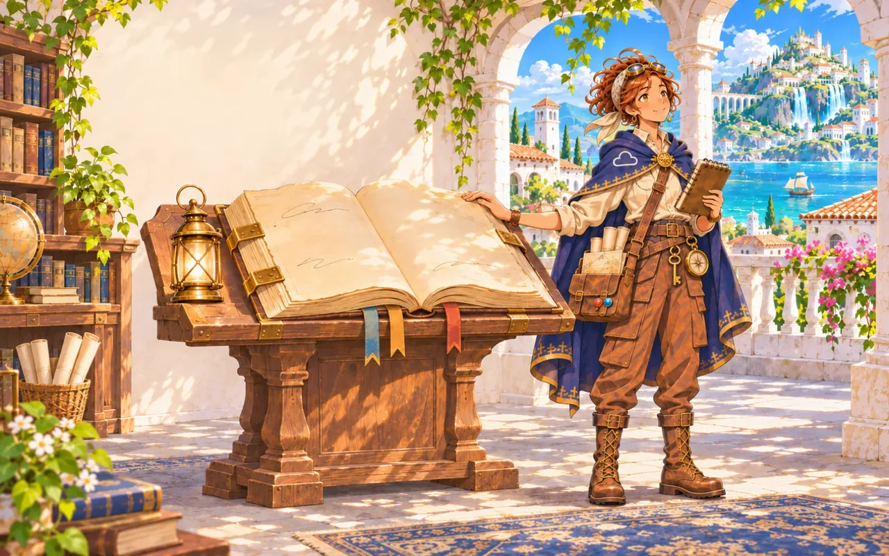
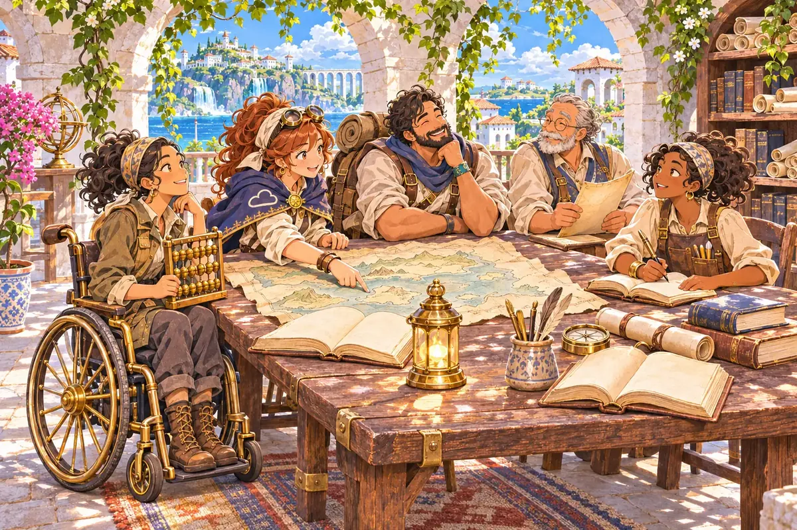
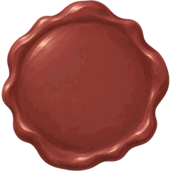
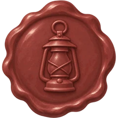
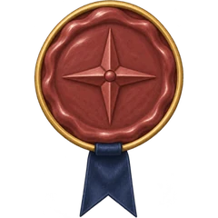

OzarLand
A shared land for better OpenStack operations.
A space where OpenStack operators share what they learn running it: runbooks by symptom, deployment choices, a learning path and first-hand experience. Started by one operator, open to everyone, whatever tool deployed your cloud. Everything is public and Apache-2.0.
In an incident? Start from the symptom in the VM runbooks, or give your AI assistant the operator skills.

An OpenStack incident right now?
Start from what you see. Each runbook begins with read-only checks, says what not to do, and states the release it was checked on.
- A compute host is unreachable, its instances are downFence before you evacuate
- nova-compute is down, the instances still runWhat still works, and what to check first
- MessagingTimeout in every serviceRabbitMQ partitioned, blocked by an alarm, or a node missing
- Every API fails on database errorsThe Galera cluster lost quorum
- "No valid host was found", although capacity existsPlacement, filters and what the scheduler really saw
- Instance stuck in BUILD, then ERRORWaiting for vif_plugged
Every symptom in the VM runbooks, or search every module.
OzarLand Academy
One learning path to run OpenStack, across one island: begin with LUMO's story, then seven stops: discover it on a disposable lab, deploy it, operate it, intervene on instances and hypervisors, take it to production, then compare another way to run it and equip your AI assistant.
Stop 0 · Begin
The basic concepts of OpenStack, told as a story: LUMO builds a village and learns why each piece of a cloud exists.
Stop 1 · Discover
A disposable OpenStack on cloud VMs in about an hour, with break-and-repair exercises.
Stop 2 · Deploy
Ways to deploy OpenStack with Kolla-Ansible, compared rather than prescribed.
Stop 3 · Operate
Day-2 operations learned from the source code, one study per OpenStack release.
Stop 4 · Intervene
Symptom-driven runbooks for instance and hypervisor problems.
Stop 5 · Go to production
Visual memos for production: one operational lesson per page.
Stop 6 · Compare
OpenStack run by Kubernetes operators on OKD: a reproducible lab for operators who know Kolla-Ansible.
Stop 7 · Equip
Agent Skills that make Claude follow a senior OpenStack operator's method, also a Claude Code plugin.
The community

Newcomer path
After LUMO's village: five short pages, read in order, on what OpenStack is made of, how to read a runbook and where to ask.
Discussions
Questions, experience reports and ideas, asked and answered in public.
Contribute
Confirm a page on your platform, share a problem you solved, describe how you deploy.
 Deeper reading
Deeper reading
The book behind many of the runbooks: OpenStack, the Day After Tomorrow.
Who is behind OzarLand
Soufian Zaouam, platform engineer and OpenStack operator.
I have operated OpenStack in production for more than five years, responsible for the Day-2 operation of mission-critical private cloud platforms ranging from several hundred to around a thousand compute nodes: incidents, maintenance, upgrades, recovery, and the organisation around them.
I started OzarLand in October 2026 as a personal initiative, to share what that work taught me with other operators. It is not a company or a product: I run it in my own name and in my own time, it is free, and everything is public under Apache-2.0. So far I build it with AI agents, from my book, my notes and my labs, and I say so openly: how OzarLand is built.
My hope is that it grows into a place where operators share their own experience. Your corrections and questions are welcome: write to me on LinkedIn, or open a discussion.
What I share on OzarLand
- OpenStack, the Day After Tomorrow My book on operating mission-critical OpenStack platforms, drawn from that production work.
- VM runbooks What to check, in which order, when an instance or a hypervisor goes wrong, and what not to do.
- Production guide One operational lesson per memo: the decisions that matter on a production platform.
- Operator skills My operating method (incident analysis, change review, maintenance planning) as skills for an AI assistant.
- Quick lab A disposable OpenStack built on a real cloud, with exercises to break and repair it.
What makes a page trustworthy
Every page says where it was observed (OpenStack release, components, deployment method) and how much it was checked. A runbook or a deployment pattern carries one of these statuses, shown under its title:

draftWritten; its commands have not been run by anyone other than the author.
lab-verifiedIts commands were run on a lab by someone other than its author (so far an AI lab agent or the maintainer), on the release the page states.
validatedConfirmed by a human operator, other than the author, on a real platform.
Today: 111 runbooks and deployment patterns. 52 lab-verified, 59 draft, 0 validated by a human operator so far.
A fourth status, experimental, marks a page that may be outdated or was confirmed only under narrow conditions. Pages are written and lab-tested with AI agents, reviewed independently, and validated only by people: how OzarLand is built.